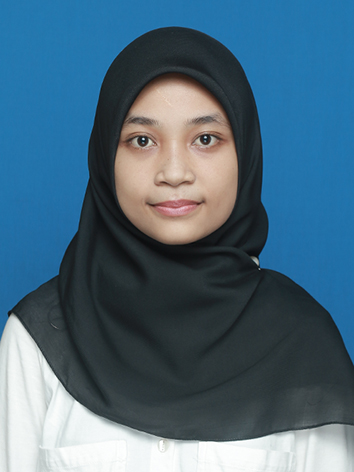

Nama saya adalah Farah Ismah Hana, Lahir di Sungailiat, 22 Desember 1999, saya adalah anak kedua dari tiga bersaudara, saya dilahirkan dari Rahim sosok Wanita yang sangat hebat Bernama frati yumarsih dan pahlawan hidupku Bernama Muhammad. Hana adalah nama panggilan akrabnya, saya terlahir dari keluarga yang sederhana, ayah saya seorang pegawai swasta dan ibu saya punya usaha kecil-kecilan yaitu usaha catering kue basah. Sejak kecil saya selalu dinasehati oleh ayah saya untuk selalu rajin beribadah, jujur dan baik terhadap sesame. Ketika saya berumur 4tahun lebih, saya mulai Pendidikan di TK Harapan Sungailiat. Selama 2 tahun saya di TK tersebut saya banyak belajar banyak hal, mulai dari menggambar, menulis, menyanyi, alphabet, berhitung, hingga Bahasa arab dan Bahasa inggris. Setelah lulus dari TK saya melanjutkan Pendidikan di SD NEGERI 8 Sungailiat, dimana disini saya saya bertemu dengan teman-teman yang asik dan friendly banget, aku merasa sangat nyaman sekali berada di sekolah ini. Disamping teman-teman yang asik, bapak dan ibu grunya juga sangat sabar dan penuh talenta dalam menyampaikan setiap mata pelajaran yang saya terima. Kemudian setelah lulus saya melanjutkan Pendidikan di SMP Negeri 1 Sungailiat 2011. Selepas lulus dari SMP di tahun 2014, saya melanjutkan Pendidikan di SMKN 1 Sungailiat. Setelah menginjak kelas X di SMK tersebut, saya pernah mengikuti lomba melukis tingkat smk antar sekolah dan mengikuti volly ball tingkat smk antar sekolah juga dan pada lomba volly tersebut mendapat juara 2. Tentu saja ini yang membuat saya sangat senang dan semakin semangat untuk mengembangkan bakat tersebut. Selain itiu juga saya aktif dalam berbagai kegiatan disekolah, saya bergabung dengan organisasi pramuka dan juga pernah menjabat sebagai sekretaris dikelas. Saat ini saya masih duduk di kelas XII SMK jurusan Teknik Komputer dan Jaringan. Setelah lulus nanti saya berencana untuk melanjutkan Pendidikan di fakultas kedokteran tetapi ada suatu masalah sehingga impian tersebut harus saya kubur, dan saya berencana untuk melanjutkan Pendidikan di kampus Poliyeknik Manufaktur Negeri Bangka Belitung jurusan Teknik Elektronika dan Alhamdulillah bisa sampai di ititk akhir dan bisa lulus.
| No | Name | Address |
|---|---|---|
| 1 | Elvira Marliani Simalakama | Air Merapin |
| 2 | Fitria Mileana Sitopang | JL.Pemuda |
| 3 | Riza Utami | Tempilang |